From six histone-mark tracks to one annotation of the genome: binarisation, a hidden Markov model, and reference epigenomes
Each histone-mark track answers one question (“is there H3K4me1 here?”). The genome’s regulatory elements are defined by combinations of marks. This lecture turns six tracks into one annotation: a chromatin state for every 200 bp.
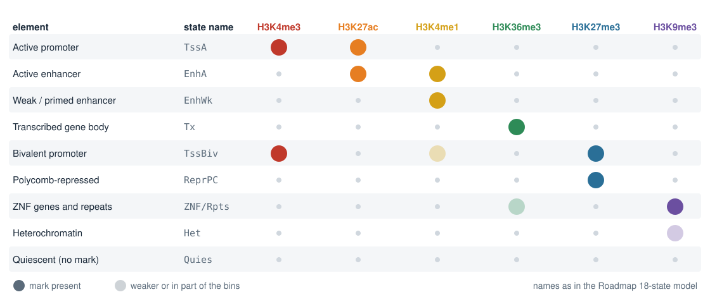
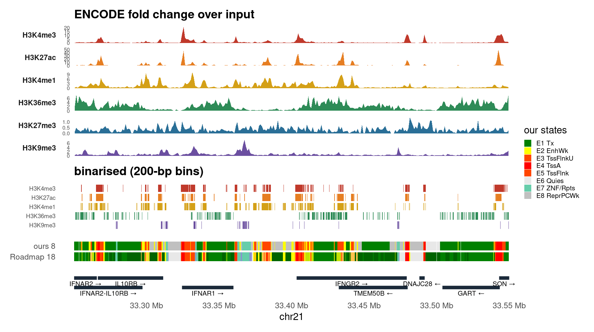
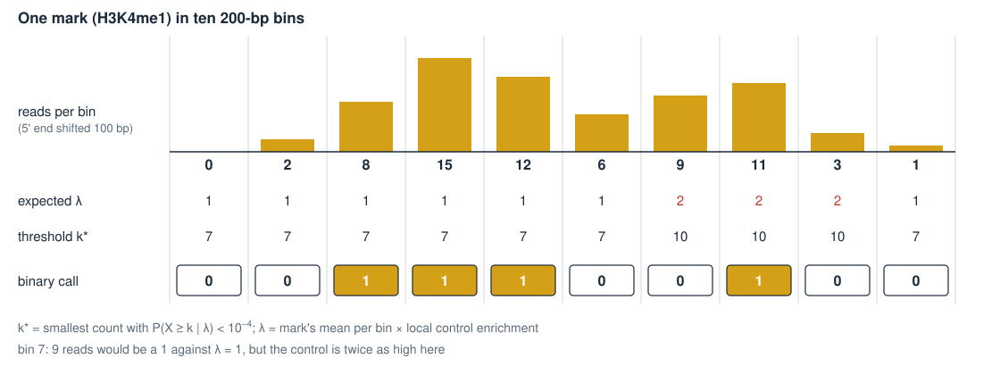
# cell mark reads control
printf "GM12878\tH3K4me3\tgm12878_h3k4me3_chip_chr21.bam\tgm12878_input_chr21.bam\n" > cellmarkfiletable.txt
... # six marks
printf "chr21\t46709983\n" > chr21.sizes
java -mx4G -jar ChromHMM.jar BinarizeBam -b 200 chr21.sizes $D cellmarkfiletable.txt binary| H3K4me3 | H3K27ac | H3K4me1 | H3K36me3 | H3K27me3 | H3K9me3 | |
|---|---|---|---|---|---|---|
| reads on chr21 | 791 771 | 141 058 | 401 955 | 158 528 | 154 148 | 285 065 |
| bins called 1 (%) | 2.97 | 1.77 | 3.61 | 2.22 | 0.88 | 0.96 |
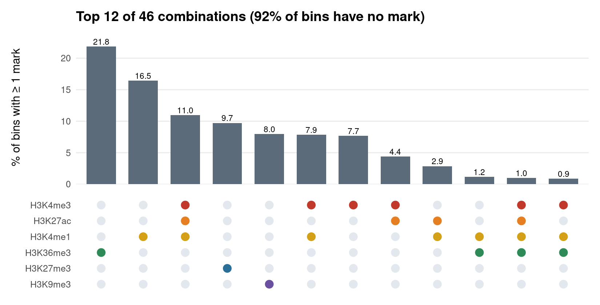
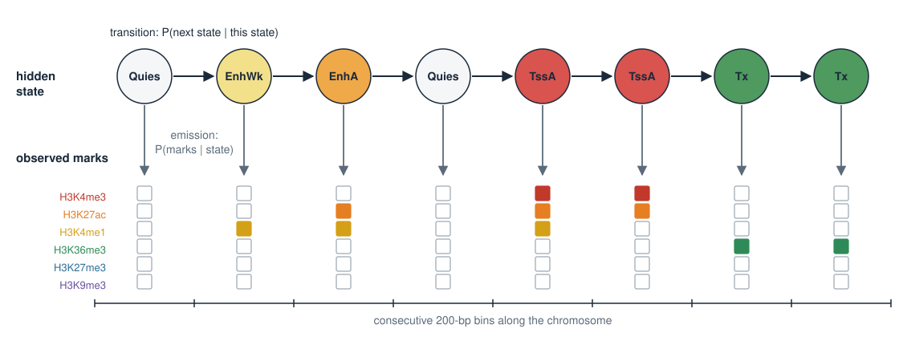
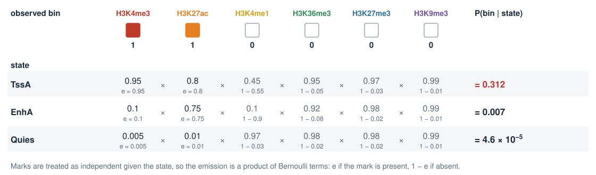
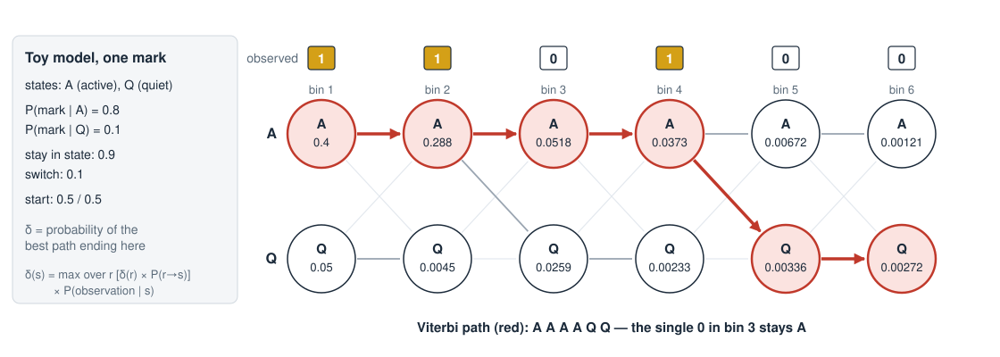
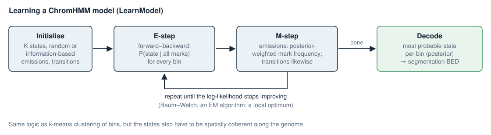
emissions_8.png/.txt, transitions_8.png/.txt, GM12878_8_segments.bed (one line per segment), browser files, and enrichment tables for TSSs, genes, CpG islands.OverlapEnrichment and NeighborhoodEnrichment compute the same enrichments for any annotation you give it.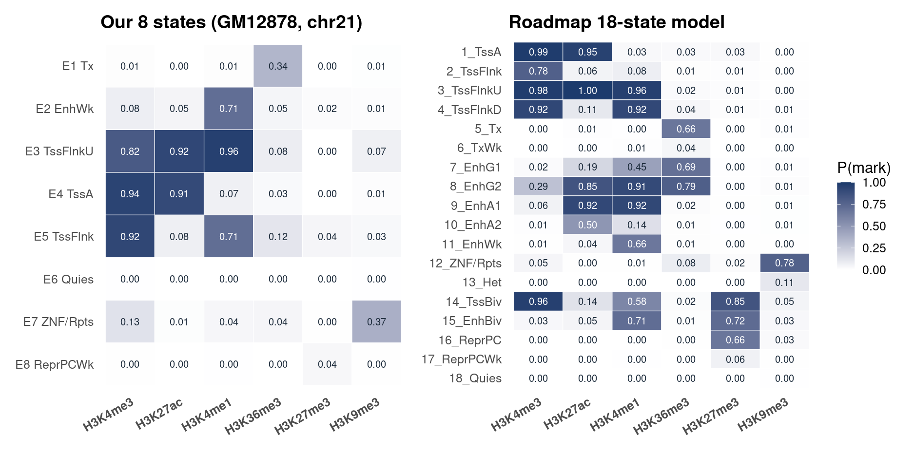
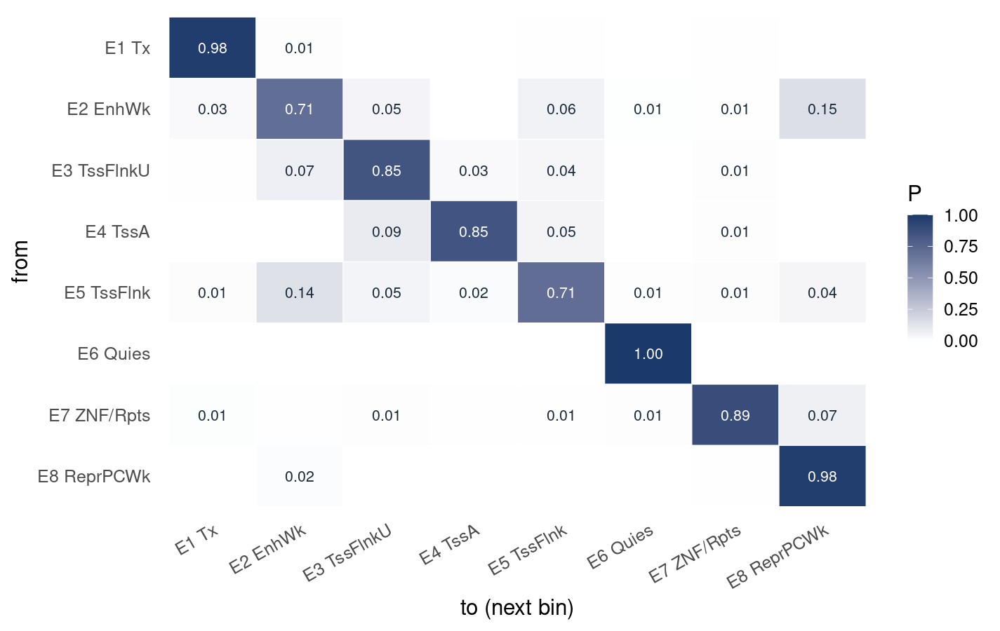
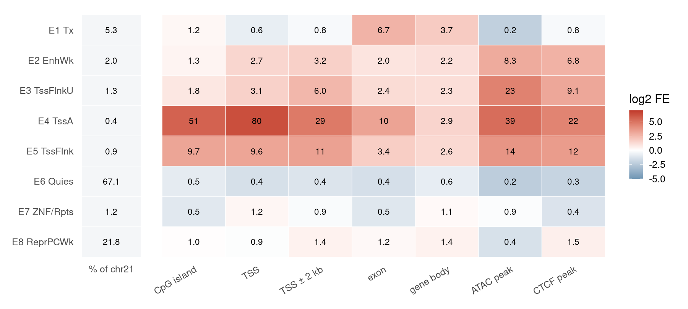
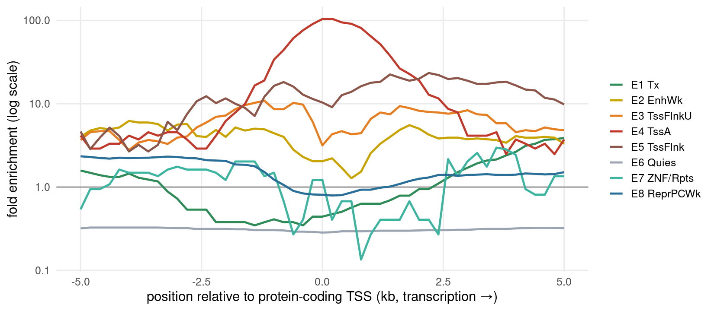
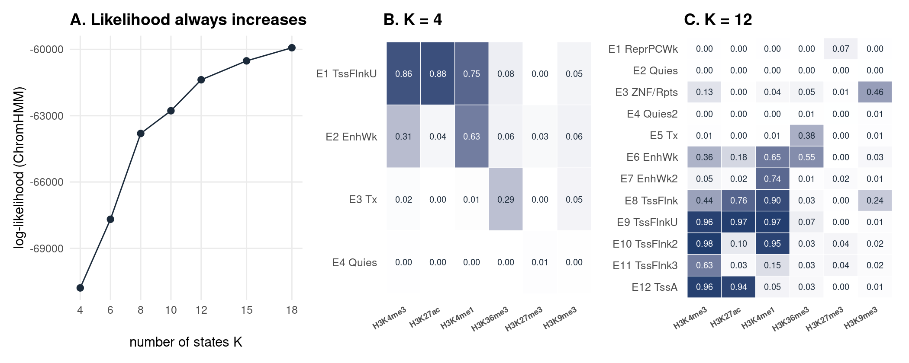
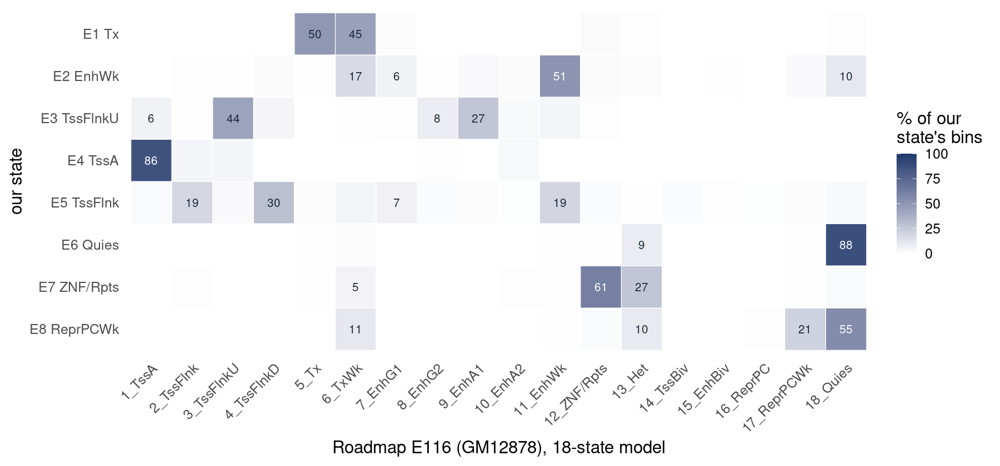
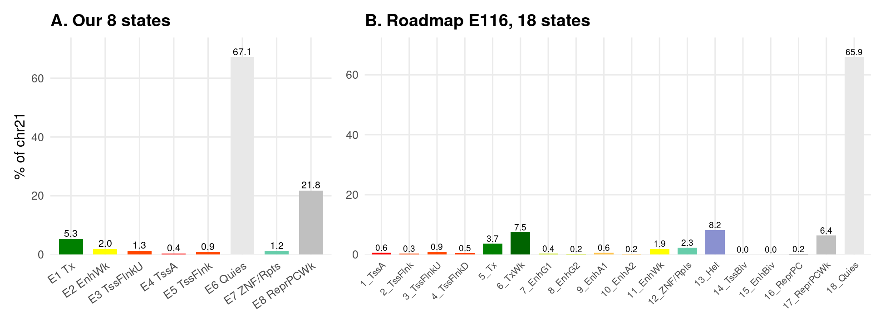
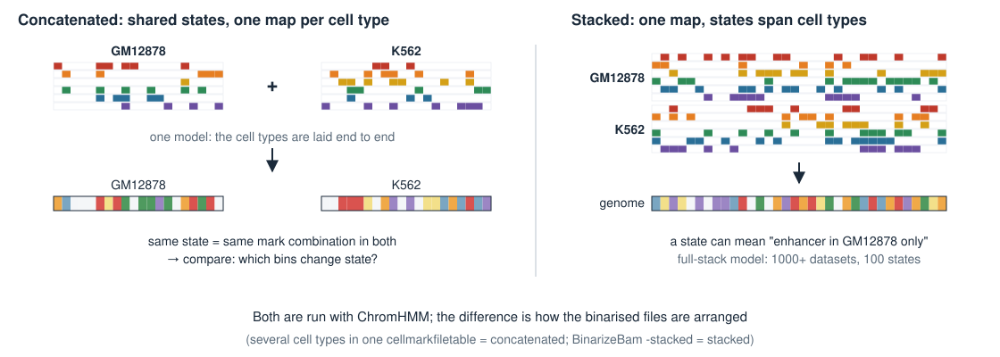
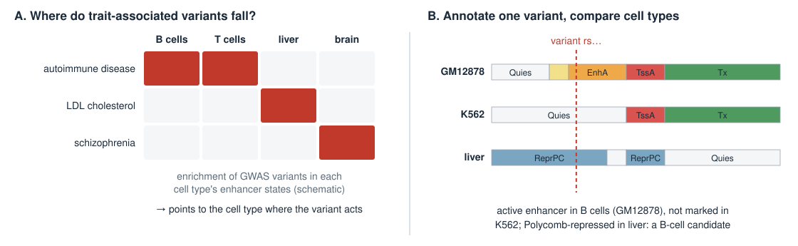
| method | input | model | resolution |
|---|---|---|---|
| ChromHMM | binarised marks | multivariate Bernoulli HMM | 200 bp |
| Segway | continuous signal (e.g. −log10 p) | dynamic Bayesian network, Gaussian emissions | 1 bp |
| IDEAS, EpiCSeg, Spectacle | signal or counts | joint across cell types / count models / spectral learning | 100–200 bp |
| topic | key idea |
|---|---|
| combinatorial code | elements are defined by combinations of marks, not single marks |
| binarisation | 200-bp bins; 1 if P(X \ge k \mid \lambda) < 10^{-4}, λ from the mark mean × local input |
| HMM | hidden state per bin; emissions (product of Bernoullis); transitions (Markov) |
| algorithms | forward (sum), Viterbi (max), Baum–Welch (EM, local optimum) |
| interpretation | emission matrix + enrichment at TSS, genes, CpG islands → state names |
| number of states | no statistical answer; interpretability and reproducibility |
| references | Roadmap 15/18/25-state models; ENCODE; full-stack 100-state annotation |
| uses | variant annotation, comparing cell types; caveat: annotation ≠ function |
Not required reading and not examined. For those who want the primary literature.